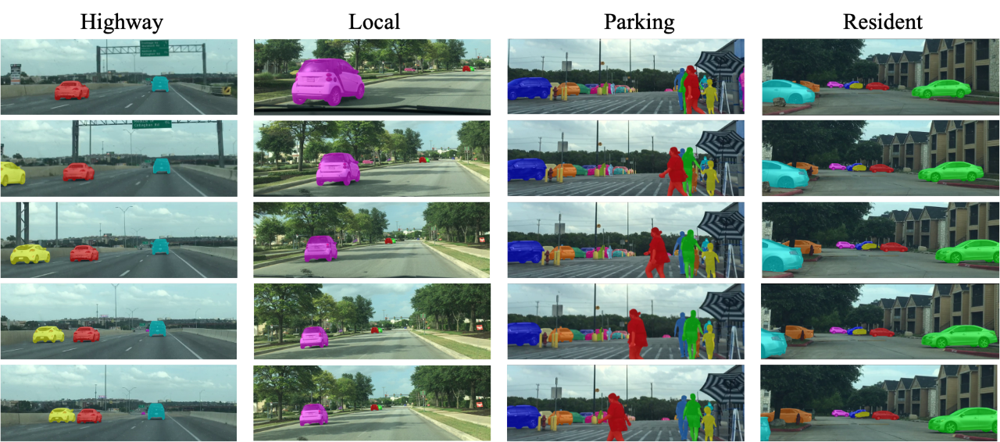
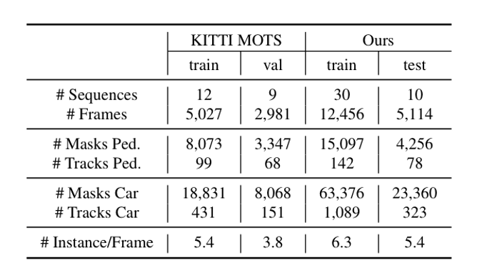

The multi-object tracking and segmentation (MOTS) is a critical task for autonomous driving applications. In this work, we offer the DGL-MOTS Dataset (Figure 1.), which includes 106,089 instance masks for 1,632 distinct objects in 40 video frames. Our effort exceeds the state-of-the-art KITTI MOTS dataset [1] in terms of dataset scale, object density and variations, and scene diversity. Results on extensive cross-dataset evaluations indicate the significant performance improvements of several state-of-the-art methods trained on our DGL-MOTS dataset.

Figure 1: Showcase of our DGL-MOT dataset. Our dataset is divided by different driving
scenarios in terms of highway, local, parking, and resident
2. Data Download
We are currently running the annotation corrections of our dataset.
Some sample data are available HERE.
Annotation statistics is displayed in Table 1.

Table 1. Annotation statistics. Our dataset outperforms the KITTI MOTS in annotation volume and density.
[1] Voigtlaender, Paul, et al. "MOTS: Multi-object tracking and segmentation." Proceedings of the IEEE conference on computer vision and pattern recognition. 2019.